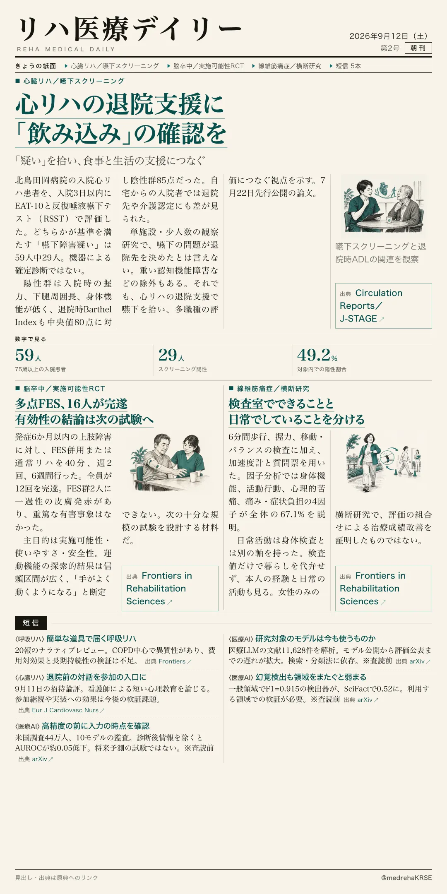
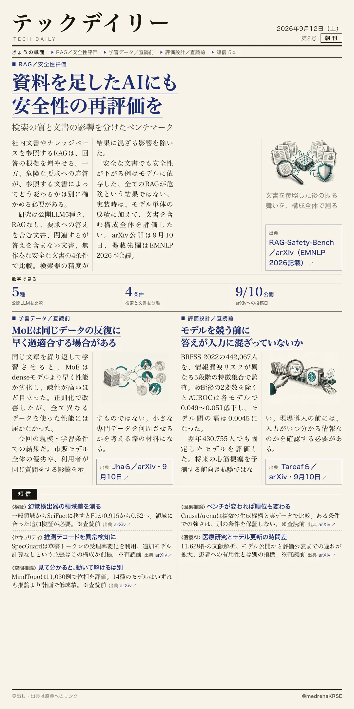

リハ医療デイリー
心リハの退院支援に「飲み込み」の確認を
「疑い」を拾い、食事と生活の支援につなぐ
徳島の75歳以上59人を調べた前向き観察研究。嚥下スクリーニング陽性は約半数で、退院時のADLも低かった。歩行・運動と合わせて見たい視点だ。

テックデイリー
資料を足したAIにも安全性の再評価を
検索の質と文書の影響を分けたベンチマーク
RAG-Safety-Benchは検索器の良し悪しと文書の内容を切り分けた。元のモデルに安全策があっても、検索を足した構成の安全性までは保証されない。
